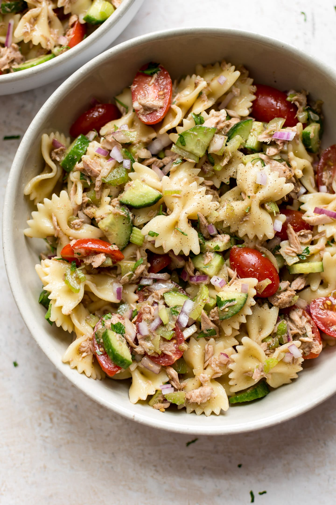

Simple Tuna Pasta Salad!

Description:
A pasta salad that is sure to please every time!
Ingredients:
- One cup sea-shell pasta
- One bunch green onions, chopped
- Halc a cup iceberg lettuce, rinsed and chopped
- Can of tuna, drained
- Can of pease, drained
- Half a cup of shredded Cheddar cheese
- Half a cup of creamy Italian dresssing
Steps:
- Fill a large pot with lightly salted water and bring to a boil. Stir in seashell pasta, and return to a boil. Cook pasta uncovered, stirring occasionally, until cooked through, but still firm to the bite, about 11 minutes; drain.
- Place green onions and lettuce in a large bowl. Add pasta, tuna, peas, and grated Cheddar cheese; mix well. Stir in dressing; toss to coat.
Nutrion:
Per Serving:260 calories; protein 13.4g; carbohydrates 25.3g; fat 11.5g; cholesterol 16.2mg; sodium 378.7mg. Full Nutrition